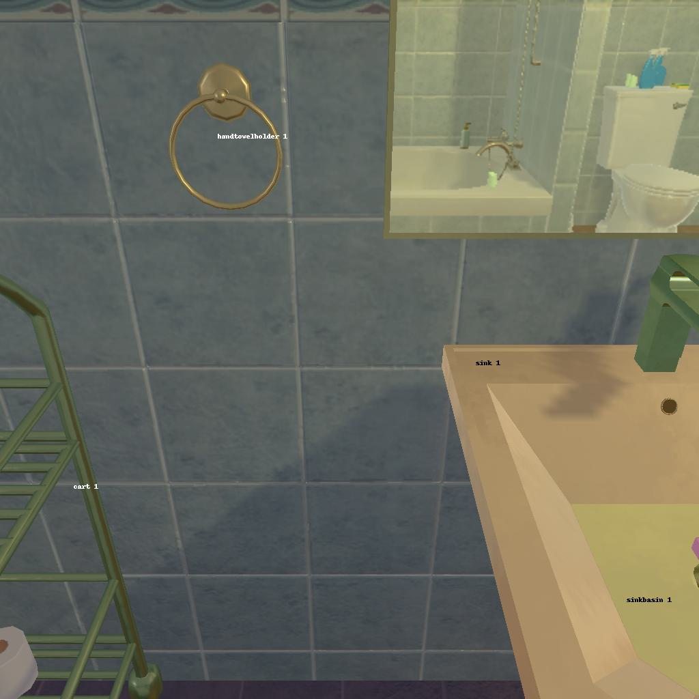

---------------------------------------------------------task: 25---------------------------------------------------------
--------------------------------------------------------------------------------------------------------------------------------------------------------------------
--------------------------------------------------------------------------------------------------------------------------------------------------------------------
Step:--------------------------------------------------------------------------0-------------------------------------------------------------------------------
----------------------------------------
VLM Prompt:
Image1:
**Instruction**
1. Analyze the provided image to identify all visible household objects, focusing on those relevant to the task description "put two dishsponge in cart."
2. Use the analysis of the image and the task hint "The agent must find an object of the desired type, pick it up, find the correct location to place it, put it down there, then look for another object of the desired type, pick it up, return to previous location, and put it down there with the other object." to answer the question: what is the most reasonable action in the choices for the task description "put two dishsponge in cart"?
4. Decide and write the answer using the template: The answer is: (i): , where i is the real number. If there is no desired object in the image, search every place based on **Initial Observation** to find the object. And if no one is exactly correct, choose a similar answer.
**Initial Observation**
You are in the middle of a room. Looking quickly around you, you can see bathtub (1), bathtubbasin (1), cart (1), toilet (1), garbagecan (1), toiletpaperhanger (1), shelf (1-4), sink (1), sinkbasin (1), handtowelholder (1)
**Answer Choices**
(1): go to bathtub 1
(2): go to bathtubbasin 1
(3): go to cart 1
(4): go to toilet 1
(5): go to garbagecan 1
(6): go to toiletpaperhanger 1
(7): go to shelf 1
(8): go to shelf 2
(9): go to shelf 3
(10): go to shelf 4
(11): go to sink 1
(12): go to sinkbasin 1
(13): go to handtowelholder 1
**Answer**
Let's think step by step by following the instructions.
----------------------------------------
----------------------------------------
Original Response:
The task is to put two dishsponges in the cart. The image provided does not show any dishsponges, and the task hint suggests that the agent must search for the object. Based on the initial observation, the agent is in the middle of a room with several household objects and locations mentioned.
Since dishsponges are typically found near a sink or on a shelf in a bathroom or kitchen setting for cleaning purposes, it would be reasonable to check those locations first. The cart is already visible in the image, so there is no need to go to it yet until a dishsponge is found.
Given the answer choices and the initial observation, the most logical places to look for a dishsponge would be the shelves, as they are common storage areas for cleaning supplies. Therefore, the most reasonable action would be to go to the shelves first.
The answer is: (7): go to shelf 1. If no dishsponge is found there, then the agent can proceed to check the other shelves in numerical order.
----------------------------------------
----------------------------------------
>>> Refine Original VLM Response and Get Pure Action: go to shelf 1
----------------------------------------
-----------------------------------------------------------------
Running time: 7.870039701461792 seconds
Total Money: 8.890060000000007
-----------------------------------------------------------------
-----------------------------------------------------------------
Text Observation:You arrive at loc 6. On the shelf 1, you see a papertowelroll 1, a toiletpaper 1, and a soapbar 1.
-----------------------------------------------------------------
UNSUCCEED